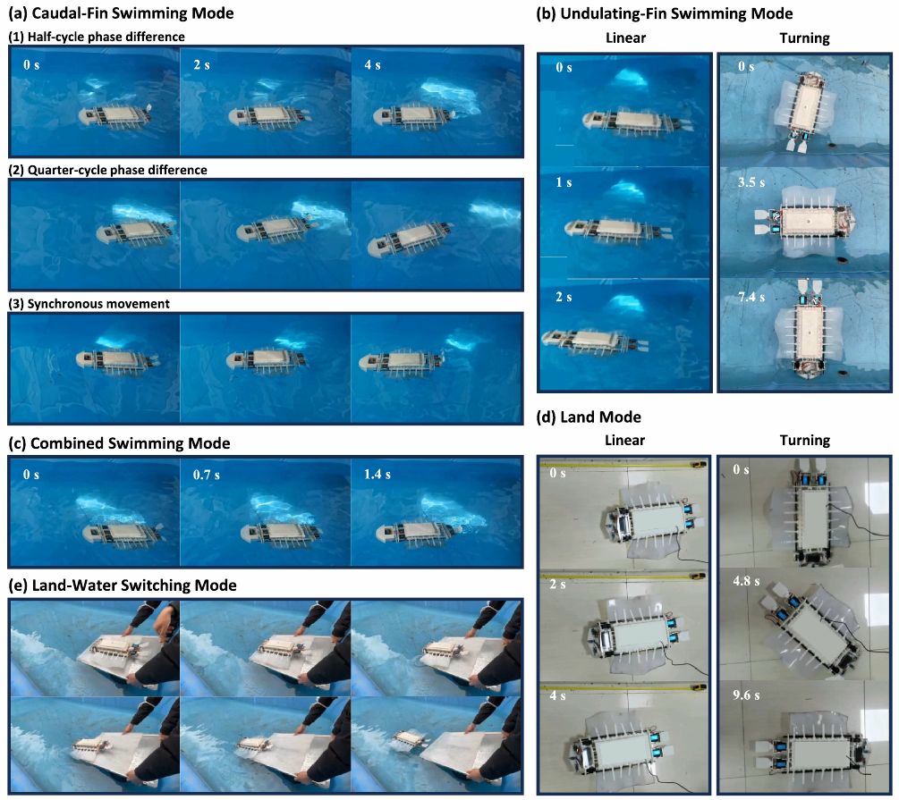
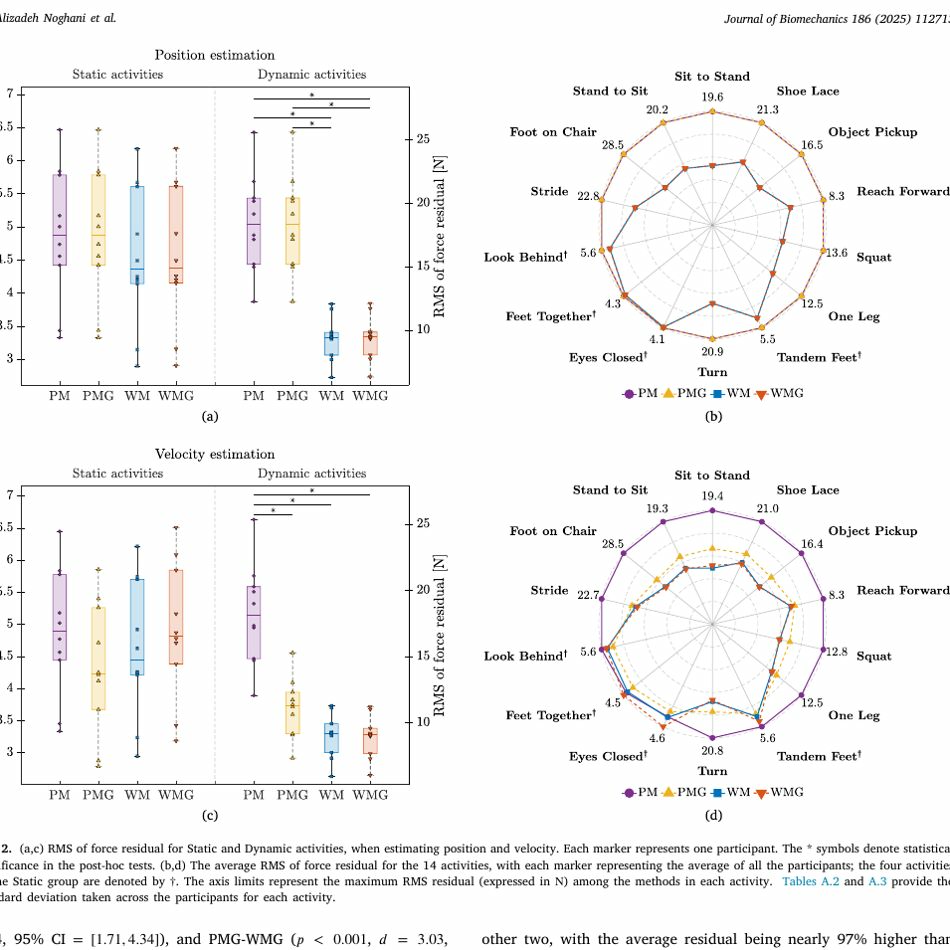

I build and optimize production robotics software in C++ and Python, bringing perception, planning, and robot learning into reliable ROS 2 systems on real hardware.
Planning, state machines, and hardware integration
3D Perception
Point clouds, registration, ICP, and multi-view vision
Robot Learning
Imitation learning, reinforcement learning, and Transformers
Experience
Robotics Software Engineer Intern
Instinct Robotics
PITTSBURGH / MAY—AUG 2026
Developed and deployed production C++ and Python robotics software in ROS2, integrating perception, motion planning, state machines, and hardware interfaces for industrial robot workflows.
Resolved failures spanning perception, planning, ROS2 communication, and hardware through structured on-robot testing.
Built a full-stack tool for annotating robot perception data used in model training and evaluation.
~30%
lower perception runtime through algorithm improvements, multithreading, and ROS2 node-level caching.
20%
shorter cycle time after profiling and optimizing perception and execution pipelines.
Data Scientist Intern · Smart Bidding
OAG Technology
NEW YORK / MAY—AUG 2025
Developed production reinforcement-learning policies using contextual bandits, PPO, and TD3, improving ROI by 18.5%. Built low-latency inference and data pipelines supporting 100K+ QPS.
Selected projects
ROBOT LEARNING / MANIPULATION
CMU
Multi-View Imitation Learning for Robotic Manipulation
Built an end-to-end imitation-learning system for a Unitree Z1 Pro 6-DoF arm. The pipeline connected SpaceMouse teleoperation, inverse kinematics, synchronized multi-camera observations, proprioception, policy inference, and robot execution.
POLICY45M-param Transformer
Behavior cloning, cross-attention, and action chunking.
INFERENCE~100 Hz
Model inference on an RTX 4060 Ti after 200K training steps.
NOVEL-VIEW SUCCESS0% → 42.9%
0/21 → 9/21 successful trials after incorporating additional training viewpoints.
In the pushing-T task, incorporating additional training viewpoints improved novel-view success by 42.9 percentage points, with 21 trials per setting. Performance varied across test conditions; these preliminary results motivate further testing across a wider range of viewpoints and task configurations.
Built a real-time pipeline that transforms IMU streams into online biomechanical estimates using signal processing, low-latency PyTorch inference, and runtime reliability checks. The ongoing system integrates gait-event detection, feedback control, and hardware execution to adapt assistance online.
STACK IMU · PyTorch · Signal processing · Gait detection · Feedback control
EMBEDDED ROBOTICS / SYSTEM INTEGRATION
TSINGHUA
Amphibious Biomimetic Robot
Robots operating across land and water need efficient propulsion without excessive mechanical complexity. Our stingray-inspired prototype combined undulating pectoral fins with dual caudal fins to explore a compact architecture for multi-environment locomotion, with potential applications in environmental monitoring and surveying.
My contribution. Led a six-member team and implemented embedded C++ on STM32, integrating sensors, actuators, and feedback control. As first author, I contributed to conceptualization, methodology, software, experimental investigation, data curation, formal analysis, and manuscript preparation.
Design and validation. One servo drives each pectoral fin, and a fixed downward fin angle supports movement in water and on land without a separate angle-adjustment mechanism. The team evaluated propulsion using particle image velocimetry, computational fluid dynamics, and prototype tests.

Prototype locomotion tests across propulsion modes and environments. Figure 6, Peng et al., Ocean Engineering (2025). Source paper ↗
SWIMMING SPEED+40%
0.10 → 0.14 m/s when caudal-fin actuation was added at a pectoral-fin frequency of 1.67 Hz.
COMBINED MODECOT 3.25
Measured cost of transport at 0.14 m/s; lower COT indicates less energy per unit weight and distance.
LAND LOCOMOTION0.06 m/s
Measured speed on ceramic tiles, with a cost of transport of 5.08.
Limitations. Experiments covered a limited speed range and controlled surfaces. Rough-terrain performance, buoyancy control, and flexible caudal fins remain future work; environmental monitoring was a potential application, not a demonstrated deployment.
$30K fundingFirst-author publicationPatent application under examination
STACK Embedded C++ · STM32 · Sensors · Actuators · Feedback control · Experimental analysis
Read paper ↗Ocean Engineering · 2025 · First author
BIOMECHANICS / STATE ESTIMATION
NOTRE DAME / TSINGHUA
Center of Mass Estimation During Non-Cyclic Activities
Estimating whole-body center of mass supports the study of human balance and informs wearable-robotics research. This study asked when a simple pelvis-marker estimate is sufficient, when whole-body tracking is needed, and whether adding ground reaction forces improves estimation.
My contribution. As co-first author, I contributed to software, methodology, investigation, data curation, formal analysis, validation, visualization, project administration, and manuscript preparation.
Methods. We analyzed an existing dataset of 10 healthy participants performing 14 activities, each repeated three times. Four estimation methods combined pelvis or whole-body markers with or without ground-reaction-force fusion using a Kalman filter. Performance was evaluated using RMS external-force residual: the mismatch between measured net force and force derived from estimated acceleration.

Method comparison across static and dynamic activities; lower force residuals indicate better agreement with measured forces. Figure 2, Alizadeh Noghani, Peng, and Bolívar-Nieto, Journal of Biomechanics (2025). Source paper ↗
STUDY DESIGN10 participants
14 activities: 4 static and 10 dynamic, each repeated three times.
DYNAMIC POSITION18.40 → 9.34 N
Average position-related force residual: pelvis-based versus whole-body method groups.
DYNAMIC VELOCITY39% lower
Pelvis-based velocity-related force residual fell from 18.17 to 11.11 N with force fusion.
Findings and limitations. No statistically significant method differences were identified for static activities. Whole-body methods performed better for dynamic position estimation; force fusion improved pelvis-based velocity estimates but did not significantly improve whole-body estimates. Results are limited to 10 healthy participants and assess force residuals rather than direct center-of-mass position error.
Read paper ↗Journal of Biomechanics · 2025 · Co-first author
AUTONOMOUS DRIVING / REINFORCEMENT LEARNING
TSINGHUA
Dangerous Pedestrian Modeling
Developed an SAC-LSTM policy from real-world trajectories for safety-critical driving simulation, producing 20–30% more realistic and aggressive behavior than rule-based baselines.